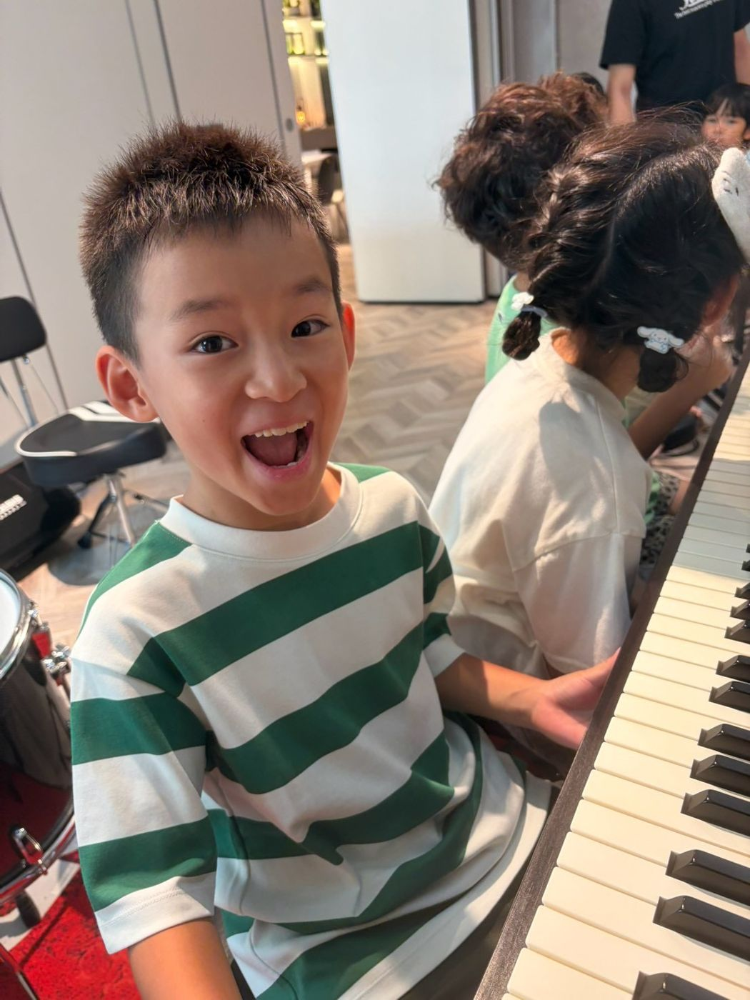
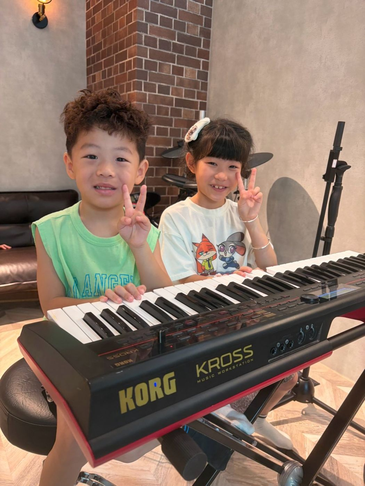
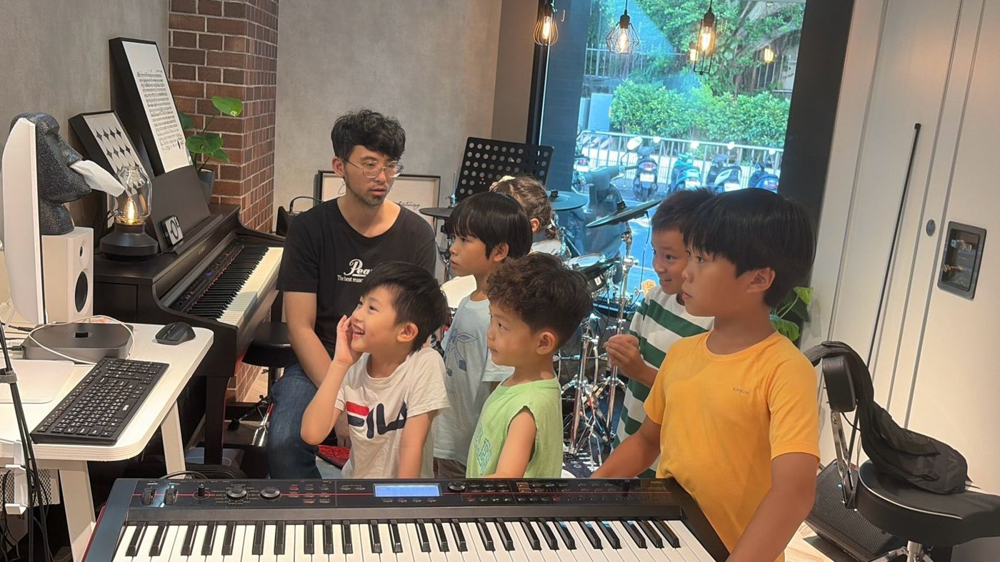

板橋鋼琴教室｜流行鋼琴、兒童與成人鋼琴課
誰說學鋼琴只能一首接一首彈枯燥的傳統練習曲？慕尼克音樂板橋校區就在國光國小正對面，我們的鋼琴課直接從「你常聽、最喜歡的那首歌」開始：學會右手旋律與左手和弦伴奏，一步一步看懂樂譜，完整彈出一首歌，也能自彈自唱。幼兒、兒童、成人與樂齡都可以學，有個人班和團體班，一堂課 50 分鐘，一期 12 堂。

流行鋼琴：從你喜歡的歌開始
流行鋼琴直接從歌曲出發。先挑一首想彈的歌，把自然音階、調性與手型指法放進歌裡練習，學會右手彈旋律、左手配和弦伴奏節奏。掌握幾個常用和弦規律之後，聽到許多流行歌與老歌都能自己配伴奏彈出來，想邊彈邊唱也沒問題。在板橋鋼琴教室裡，練的不是一頁頁練習曲，而是你耳機裡正在播的那首歌。
鋼琴課會學什麼
- 自然手型與指法基礎
- 常用和弦按法與左手伴奏節奏型
- 一步一步看懂五線譜與簡譜和弦、基礎樂理
- 完整彈奏一首歌、自彈自唱與樂團鍵盤伴奏
板橋兒童鋼琴課
孩子學鋼琴，最重要的是累積「這首我會彈了！」的成就感。老師會從孩子熟悉的旋律與簡單的曲目開始，一首完成再換下一首，在好玩的互動裡把手型、看譜與律動感練穩。每天在家練的時間不用長，養成固定坐在琴前的好習慣更重要。
幼兒鋼琴團體班（4 歲以上小班制）
慕尼克開設小班制的幼兒鋼琴團體班，讓 4 歲以上的孩子和同年齡同伴一起唱譜、玩節奏遊戲、認識鍵盤高低音與黑鍵白鍵。上課內容會依孩子的年紀與吸收步調安排，最新開班時段請用官方 LINE 詢問。
板橋成人鋼琴：大人與樂齡學鋼琴
大人零基礎、看不懂五線譜也可以學！很多大人與退休族想學的是「親手彈唱一首喜歡的流行歌或經典老歌」，從直覺的和弦譜開始就能一步步上手。個人班的排課時間彈性，完全配合你的生活步調。下班後坐到琴前，左手按下和弦、右手接上旋律——板橋成人鋼琴課要的不是無止盡的重複基本功，而是一首你真心想彈的歌。
個人班和團體班
個人班是一對一上課，依個人程度與目標曲目安排進度。團體班和同伴一起學、互相激勵，依報名人數開班，最新時段請在官方 LINE 詢問。孩子想從兒童鋼琴開始、大人想報板橋成人鋼琴，在板橋鋼琴教室都能從個人班零基礎排起。
一堂課 50 分鐘，一期 12 堂。依規定請假，一期可以補課 3 次。預約時段請撥打手機 0939-239-219、市話 02-8965-2288，或加入官方 LINE 詢問。非營業時間或老師帶學生演出時，市話可能無人接聽，請改撥手機。
走進樂團當鍵盤手
學會和弦與伴奏律動之後，鋼琴也能走進板橋樂團班擔任樂團鍵盤手，和爵士鼓、吉他、Bass 與主唱一起合奏！慕尼克也有親子樂團，爸媽可以和孩子同台演奏。
樂團合奏由累積超過 200 首作品的音樂製作人小江老師（江孟翰）與精通流行鍵盤編曲的小佑老師（陳諺群）親自指導，將鍵盤聲部、各樂器與歌唱整合編曲，讓學員在舞台大廳享受樂團合奏的樂趣。

教室環境

上課照片





上課地點與時間
地址：新北市板橋區中正路 325 巷 47 號 1 樓（國光國小正對面）
營業時間：週三、五 16:30–22:00；週四 14:00–22:00；週六、日 13:00–22:00；週一、二公休；週二可預約開課，有需要請先來電或 LINE 詢問。
交通：公車 307 港尾站步行 3 分鐘。捷運板橋站約 1.1 公里，騎 YouBike 約 5–7 分鐘。
停車：Times 中正路停車場走路約 2 分鐘，國光公園日月亭停車場走路約 4 分鐘。
想先看別的樂器，有板橋爵士鼓課、新北板橋吉他課、板橋樂團班，以及板橋 Bass 課、板橋歌唱課。
常見問題
完全沒學過鋼琴，可以直接學流行鋼琴嗎？
可以！老師一樣會從正確手型、常用和弦與簡單的歌曲開始帶，看譜也會一步一步教，沒學過鋼琴，也能從流行歌開始上手。
大人或退休族零基礎可以學鋼琴嗎？
可以。兒童、成人與樂齡都能上課，從直覺的和弦譜開始也完全上得了，個人班的排課時間很彈性。
幼兒鋼琴團體班幾歲可以上？
滿 4 歲以上就可以報名幼兒鋼琴團體班。最新開班時段請加入官方 LINE 詢問。
家裡沒有傳統鋼琴怎麼辦？
上課時教室有鋼琴與鍵盤樂器可以使用。在家練習只要準備一台電鋼琴（數位鋼琴）或鍵盤即可，不佔空間又能調整音量；要準備哪一種規格，可以先問老師或在官方 LINE 詢問。
鋼琴課一堂多久？怎麼報名？
一堂課 50 分鐘，一期 12 堂。最新排課時段與報名方式，請撥打手機 0939-239-219、市話 02-8965-2288，或加入官方 LINE 詢問。非營業時間或老師帶學生演出時，市話可能無人接聽，請改撥手機。
板橋鋼琴課在哪裡上？
在新北市板橋區中正路 325 巷 47 號 1 樓，就在國光國小正對面。
想在板橋親手彈出你最愛的那首歌嗎？加入官方 LINE，告訴我們想彈的曲子。
在官網填表預約加入官方 LINE撥打 0939-239-219撥打 02-8965-2288非營業時間或老師帶學生演出時，市話可能無人接聽，請改撥手機。